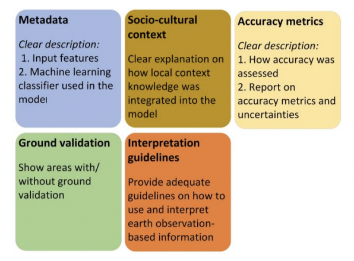

4 Policy
This week focuses on how we may utilise insights gained from Earth Observation analysis to assist local, regional and national government to implement data-drive policies, whilst increasing compliance to urban/global agendas.
4.1 Case Study: Informal Settlements & Flood risks in Nairobi, Kenya
4.1.1 Context
Source: Global Partnership for Result-Based Appraoaches (n.d.)
4.1.1.1 Informal Settlement Expansion
- Until the Covid-19 pandemic, Nairobi was one of the fastest growing urban economies in Africa with annual average GDP growth of 5.9% between 2010 - 2018 ( “Economic Growth and Trade | Kenya” (2023) ) The GDP of the city amounted to 36 billion USD ( “Nairobi” (n.d.) ).
- Despite rapid economic growth, the city has been unable to provide housing infrastructure for its increasing population. The spoils of growth have not yet been used to support the city’s sustainable expansion.
- 75% of urban population growth in Nairobi is accounted for by informal settlements, and the proportion of urban population living in slums is predicted to double in the next 15 years.
- Informal settlements cover 5% of total residential land of the city but house half of the city’s total population (UN Habitat (n.d.) ).
- 2/3 of Kenyans continue to live in poverty, making less than 3.2 GBP per day.
- 70% Kenyan families are chronically vulnerable to food and nutrition insecurity and preventable diseases.
- Nairobi is also extremely vulnerable to impact of the climate crisis – leading to food insecurity, reducing access to clean water, and exposing residents to increasingly frequent instances extreme heat and preventable diseases.
4.1.1.2 Flood Risk
Around 22,000 Kiberans live within 30m of the Ngong River, where over 50% of the residents reported their homes were flood during the 2015 long rains. Mulligan et al. (2017)
Climate change is due to exacerbate Nairobi rainfall, with rainfall projected to be increase by 1/3. Cook et al. (2020)
Despite risks, informal settlements continue to expand towards the river as those areas are often less regulated, and residents encounter less resistance building towards that area.
4.1.2 International Framework
Sustainable Development Goals
Source: (unitednationsCommunicationsMaterialsn.d?).
The Sustainable Development Goals are a set of 17 objectives that serve as a ‘blueprint to a to achieve a better and more sustainable future for all’, devised and led by the United Nations. The SDGs pushes for sustainable development that recognises the interconnectedness of social, economic and environmental aspect of society.
Relevant goals:
UN SDG02: End hunger, achieve food security and improved nutrition and promote sustainable agriculture.
Target 02.1: By 2030, end hunger and ensure access by all people, in particular the poor and people in vulnerable situations, including infants, to safe, nutritious and sufficient food all year round.
Indicator: Prevalence of moderate or severe food insecurity in the population, based on the Food Insecurity Experience Scale (FIES).
UN SDG06: Ensure availability and sustainable management of water and sanitation for all.
Target 06.2: By 2030, achieve access to adequate and equitable sanitation and hygiene for all and end open defecation, paying special attention to the needs of women and girls and those in vulnerable situations.
Indicator: Proportion of population using (a) safely managed sanitation services and (b) a hand-washing facility with soap and water.
UN SDG11: Make cities and human settlements inclusive, safe, resilient and sustainable.
Target 11.1: By 2030, ensure access for all to adequate, safe and affordable housing and basic services and upgrade slums.
Indicator: Proportion of urban population living in slums, informal settlements or inadequate housing.
4.1.3 Urban-level framework
Nairobi Climate Action Plan 2020-2050
- Nairobi has set out 15 climate resilience actions to strength the city against extreme weather, of which pertained very little detail onto how laid actions would be implemented.
Relevant actions include:
4.1.3.1 Action 13: Increase access to climate resilience programmes.
Source: “Nairobi Climate Action Plan 2020-2050 Summary Booklet | Nairobi City County” (2022)
- How the city of Nairobi aims to move towards such goals is unclear from this document.
- Geospatial technology (GIS, satellite imagery) is mentioned only once, where the local authority acknowledges that the lack of GIS technology means that they are unable to provide an accessible and wide-spread urban transit system.
- This shows the Nairobi government is unable at present to effectively harness Earth Observation data to push forward their urban climate agenda.
- The document also seems to encourage residential house building in climate sensitive areas.
- Slum mapping — see where slums will expand and provide amenities accordingly.
4.2 Application
Informal settlements in Nairobi are recognised as a serious issues by the city level government and national government, and is referenced by the United Nations as a worsening problem.
Informal settlements need to be identified easily, at low cost and with increasing frequency, so that the local government is able to understand the direction of their expansion and population variations within the settlements.
Geospatial mapping would enable local authorities to build much-needed sanitation infrastructure in areas of high and increasing population density. An up-to-date understanding of the growing population in informal settlements could provide much-needed information for social policymakers for wider programmes of healthcare, education or other public services.
Earth observation data would also allow the government to identify areas of environmental vulnerability so that they are able to concentrate limited resources on regulating or halting the further expansion of informal settlements in the most environmentally sensitive areas.
4.2.1 Slum identification
| Approach | Purpose | Data | References |
|---|---|---|---|
| LULC | To identify the spatial distribution of informal settlements, Buid- up areas with high population density, bodies of water, barren land, road networks. | Landsat TM/ Landsat 8/Rapid Eye Images | Badmos et al. (2018) used LULC and Landsat images and generated 6 land classification: water, vegetated area, open space, road, slum and other urban, through 2009 to 2015. They were then able to track how the slums are encroaching other unsafe spaces (water) which could increase mortality. |
| Environment (Flood Risk) Assessment | To identify areas of low elevation and areas susceptible to flooding. | NASADEM Global Elevation Model Historical rainfall data (SM2RAIN-ASCAT) |
De Risi et al. (2013) Established a general framework for conduction flood risk assessment for informal settlements. Using Digital Elevation Models alongside historical rainfall data, a geospatial climate model is produced to identify areas of high flood risks. |
| Infrastructure Assessment | Identify quality and type of infrastructure in informal settlements to identify areas vulnerable to flood risk. Often Informal settlement infrastructure are not up to housing code. | Very High Resolution images: Landsat TM, SPOT An alternative is open sourced data: OSM and medium Resolution satellite imageries |
Assarkhaniki, Sabri, and Rajabifard (2021) noted that often developing nations do not have the funds and resources to access high resolution images. This is especially true the Nairobi. OSM layered over medium resolution Landsat 8 can provide a much more accessible method to achieve resilience and SDGs in informal settlements. Geometric features can be extracted and different building types can be classified. |
Insights gain from the above geospatial analysis can enable local government to make data informed policy. These information forms the foundation of sustainable resilience.
4.2.1.1 Methodology
Owusu et al. (2021)’s paper highlights the ethical considerations when producing insight from geospatial analysis with the aims of policy application.

Source: Owusu et al. (2021)
The image above is what they deem as key deliverables when working with clients. I think strikes a good balance between focusing on technicality in remote sensing, but also considering the wider policy application context and consequences.
4.3 Reflection
Without the necessary public policy interventions or structures in place, rapid economic growth can coexist with increasingly severe housing, environmental and health issues. The right understanding of the urban landscape, how it is changing and what the demographic and economic profile of residents are can be used to solve some of those problems.
Geospatial data is useful not just to evaluate the existing status of built environments but as a tool to observe almost real-time changes in a rapidly expanding urban environment. This provides signifcant advantages for policymakers who are often required to dedicate limited resources to solving rapidly changing problems, moreso in areas such as Nairobi where there is a fast-growing population and increasingly severe problem of informal settlements.
Earth observation data is not always widely used in the policy space, and is - particularly in this instance - sometimes not seriously acknowledged by governments as a major tool for urban policymaking, despite its relatively low cost to access and high potential to improve the understanding of the urban landscape. It is unclear why this is the case, and what could be done to draw greater attention to geospatial data within policymaking at a local level.